전기산업기사 (2011-06-12 기출문제)
1과목: 전기자기학
1. 액체 유전체를 넣은 콘덴서의 용량이 20[㎌]이다. 여기에 500[kV]의 전압을 가하면 누설전류는 몇 [A]인가? (단, 비유전율 ℇs=2.2, 고유저항 p = 1011 [Ω ㆍ m]이다.)
- 4.2
- 5.13
- 54.5
- 61
(정답률: 74%)

2. 공기 콘덴서를 어느 전압으로 충전한 다음 전극간에 유전체를 넣어 정전용량을 2배로 하였다면 축적되는 에너지 몇배로 되는가?
- 1/4배
- 1/2배
- √2배
- 2배
(정답률: 49%)
3. 한 변의 길이가 a[m]인 정육각형의 각 정점에 각각 Q[C]의 전하를 놓았을 때 정육각형의 중심 O의 전계의 세기는 몇 [V/m]인가?
- 0
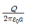
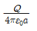
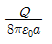
(정답률: 82%)
4. 공심 환상철심에서 코일의 권회수 500회, 단면적 6m2, 평균 반지름 15cm, 코일에 흐르는 전류를 4A라 하면 철심 중심에서의 자계의 세기는 약 몇 [AT/m]인가?
- 1061
- 1325
- 1821
- 2122
(정답률: 51%)
5. 정전계에 대한 설명으로 가장 적합한 것은?
- 전계 에너지가 최대로 되는 전하분포의 전계이다.
- 전계에너지와 무관한 전하분포의 전계이다.
- 전계에너지가 최소로 되는 전하분포의 전계이다.
- 전계에너지가 일정하게 유지되는 전하분포의 전계이다.
(정답률: 76%)
6. 권수 600, 단면적 100cm2의 공심 코일에 전류 1[A]를 흘릴때, 자계가 1.28[AT/m]이었다. 자기 인덕턴스는 몇[H]인가?
- 9.65 × 10-6
- 8.⑤ × 10-6
- 6.28 × 10-8
- 0.64 × 10-8
(정답률: 44%)
7. 시간적으로 변화하지 않는 보존적인 전계가 비회전성 이라는 의미를 나타낸 식은?
- ∇ ㆍ E = 0
- ∇ ㆍ E = ∞
- ∇ × E =0
- ∇2E = 0
(정답률: 67%)
8. 전자석의 흡입력은 공극(air gap)의 자속밀도를 B라 할때, 다음의 어느것에 비례하는가?
- B
- B0.5
- B1.6
- B2.0
(정답률: 75%)
9. 자속밀도 B[Wb/m2]인 자계 내를 속도 v[m/s]로 운동하는 길이 dl[m]의 도선에 유기되는 기전력[V]은?
- v × B
- (v × B) ㆍ dl
- (v ㆍ B)
- (v ㆍ B) × dl
(정답률: 68%)
10. 전자계에서 맥스웰의 기본 이론이 아닌 것은?(오류 신고가 접수된 문제입니다. 반드시 정답과 해설을 확인하시기 바랍니다.)
- 고립된 자극이 존재한다.
- 전하에서 전속선이 발산된다.
- 전도 전류와 변위 전류는 자계를 발생한다.
- 자계의 시간적 변화에 따라 자계의 회전이 생긴다.
(정답률: 76%)
11. 진공 중에서 자기 쌍극자의 축과 θ의 각을 이루고, 자기 쌍극자 중심에서 r[m] 떨어진 점의 자계의 세기를 설명한 것 중 맞는 것은?
- 자극의 세기 m에 반비례한다.
- r3에 반비례한다.
- sinθ에 비례한다.
- 두 점 자극을 잇는 거리에 반비례한다.
(정답률: 82%)
12. 전계 및 자계가 z 방향의 성분을 갖지 않고 동일한 전계와 자계를 합한 면이 z축에 수직이 되는 파를 무엇이라 하는가?
- 직선파
- 전자파
- 굴절파
- 평면파
(정답률: 58%)
13. 역자성체 내에서 비투자율 μs는?
- μs ⨠ 1
- μs ＞ 1
- μs ＜ 1
- μs = 1
(정답률: 78%)
14.
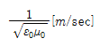
의 값은?- 1 × 108
- 2 × 108
- 3 × 108
- 4 × 108
(정답률: 73%)
15. 전기력선의 성질이 아닌것은?
- 전기력선은 도체내부에 존재한다.
- 전기력선은 등전위면인 도체 표면과 수직으로 출입한다.
- 전기력선은 그 자신만으로 폐곡선이 되는 일이 없다.
- 1[C]의 단위 전하에는 1/ℇ0개의 전기력선이 출입한다.
(정답률: 66%)
16. 일정 전압이 가해져 있는 콘덴서에 비유전율이 ℇs인 유전체를 채웠을 때 일어나는 현상은?
- 극판간의 전계가ℇs배가 된다.
- 극판간의 전계가 ℇs2배가 된다.
- 극판간의 전하량이 ℇs배가 된다.
- 극판간의 전하량이 1/ℇs로 된다.
(정답률: 58%)
17. 영구자석의 재료로 사용되는 철에 요구되는 사항으로 다음 중 가장 적절한 것은?
- 잔류자속밀도는 작고 보자력이 커야한다.
- 잔류자속밀도는 크고 보자력이 작아야 한다.
- 잔류자속밀도와 보자력이 모두 커야한다.
- 잔류자속밀도는 커야 하나, 보자력은 0이어야 한다.
(정답률: 75%)
18. 반지름a[m]인 도체구에 전하 Q[C]을 주었을 때, 구 중심에서 e[m]떨어진 구 밖(r＞a)의 한 점의 전속밀도 D[C/m2]는?
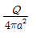
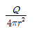
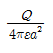
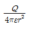
(정답률: 55%)
19. 그림과 같이 유전율이 ℇ1, ℇ2인 두 유전체의 경계면에 중심을 둔 반지름 a[m]인 도체구의 정전용량은?
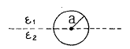
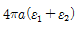
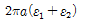
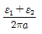
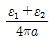
(정답률: 57%)
20. 내부 원통의 반지름 a[m], 외부 원통의 안지름이 b[m], 길이 l[m]인 동축원통 도체간에 도전율 k[℧/m]인 물질을 채워넣고 내외 원통 도체 간에 전압 V[V]를 걸었을 때에 전류는 몇 [A]인가?
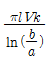
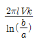
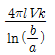
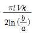
(정답률: 65%)
2과목: 전력공학
21. 송전선의 전압 변동률 식은
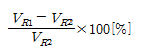
로 표현된다. 이 식에서 VR1은 무엇인가?- 무부하시 송전단 전압
- 부하시 송전단 전압
- 무부하시 수전단 전압
- 부하시 수전단 전압
(정답률: 69%)
22. 전력 원선도에서 구할 수 없는 것은?
- 조상용량
- 송전 손실
- 정태안전 극한 전력
- 과도안정 극한 전력
(정답률: 55%)
23. 어떤 고층 건물의 총 부하 설비전력이 400[kW], 수용률 0.5일 때, 이 건물의 변전설비 용량의 최저값은 몇kVA인가? (단, 부하의 역률은 0.8이다.)
- 150
- 200
- 250
- 300
(정답률: 73%)
24. 다음 중 전력계통에서 인터록의 설명으로 적합한 것은?
- 차단기가 열려 있어야만 단로기를 닫을 수 있다.
- 차단기가 닫혀 있어야만 단로기를 닫을 수 있다.
- 차단기의 접점과 단로기의 접점이 동시에 투입될 수 있다.
- 차단기와 단로기는 각각 열리고 닫힌다.
(정답률: 70%)
25. 1상의 대지 정전용량이 0.5[㎌]이고, 주파수 60[Hz]의 3상 송전선 소호 리액터의 인덕턴스는 몇[H]인가?
- 2.69
- 3.69
- 4.69
- 5.69
(정답률: 45%)
26. 주상변압기의 1차측 전압이 일정할 경우 2차측 부하가 변하면, 주상변압기의 동손과 철손은 어떻게 되는가?
- 동손과 철손이 모두 변한다.
- 동손과 철손은 모두 변하지 않는다.
- 동손은 변하고 철손은 일정하다.
- 동손은 일정하고 철손이 변한다.
(정답률: 75%)
27. 등가 송전선로의 정전용량 C=0.008[㎌/㎞], 선로길이 L=100[㎞], 대지 전압 E=37000[V]이고, 주파수 f=60[㎐]일 때, 충전 전류는 약 몇 [A]인가?
- 11.2
- 6.7
- 0.635
- 0.426
(정답률: 62%)
28. 다음 중 가스 차단기(GCB)의 보호장치가 아닌 것은?
- 가스 압력계
- 가스 밀도 검출계
- 조작 압력계
- 가스 성분 표시계
(정답률: 72%)
29. 다음 중 조상설비에 해당되지 않는 것은?
- 분로 리액터
- 동기 조상기
- 상순 표시기
- 진상 콘덴서
(정답률: 78%)
30. 송전선에 낙뢰가 가해져서 애자에 섬락이 생기면 아크가 생겨 애자가 손상되는 경우가 있다. 이것을 방지하기 위하여 사용되는 것은?
- 댐퍼
- 아아모로드
- 가공지선
- 아킹혼
(정답률: 78%)
31. 출력 20[kW]의 전동기로 총양정 10[m], 펌프효율 0.75일 때 양수량은 몇 m3/min인가?
- 9.18
- 9.85
- 10.31
- 15.5
(정답률: 52%)
32. 피뢰기의 제한전압이란?
- 상용주파전압에 대한 피뢰기의 충격방전 개시전압
- 피뢰기가 침입시 피뢰기의 충격방전 개시 전압
- 피뢰기가 충격파 방전 종료 후 언제나 속류를 확실히 차단할 수 있는 상용주파 최대전압
- 충격파 전류가 흐르고 있을 때의 피뢰기 단자전압
(정답률: 67%)
33. 그림에서와 같이 부하가 균일한 밀도로 도중에서 분기되어 선로 전류가, 송전단에 이를수록 직선적으로 증가할 경우 선로 말단의 전압 강하는 이 송전단 전류와 같은 전류의 부하가 선로의 말단에만 집중되어 있을 경우의 전압강하보다 대략 어떻게 되는가? (단, 부하역률은 모두 같다고 한다 )
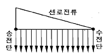
- 1/3로 된다.
- 1/2로 된다.
- 동일하다.
- 1/4로 된다.
(정답률: 63%)
34. 지중 케이블에서 고장점을 찾는 방법이 아닌것은?
- 머리 루프 시험기에 의한 방법
- 메거에 의한 측정 방법
- 임피던스 브리지법
- 펄스에 의한 측정법
(정답률: 69%)
35. 수력발전소에서 서보모터의 작용으로 옳게 설명한 것은?
- 축받이 기름을 보내는 특수 전동펌프이다.
- 안내날개를 조절하는 장치이다.
- 전기식 조속기용 특수 전동기이다.
- 수압관 하부의 압력조정 장치이다.
(정답률: 63%)
36. 선로 정수를 전체적으로 평행되게 만들어서 근접 통신선에 대한 유도 장해를 줄일 수 있는 방법은?
- 연가를 한다.
- 딥(dip)을 준다.
- 복도체를 사용한다.
- 소호 리액터 접지를 한다.
(정답률: 78%)
37. 철탑에서의 차폐각에 대한 설명 중 옳은 것은?
- 차폐각이 클수록 보호 효율이 크다.
- 차폐각이 작을수록 건설비가 비싸다.
- 가공지선이 높을수록 차폐각이 크다.
- 차폐각은 보통 90도 이상이다.
(정답률: 60%)
38. 3상 1회선 전선로에서 대지정전용량을 Cs[F/m], 선간 정전용량을 Cm[F/m]이라 할 때, 작용정전용량 Cn[F/m]은?
- Cs + Cm
- Cs + 2Cm
- Cs + 3Cm
- 2Cm + Cm
(정답률: 79%)
39. 수전단 전압 66kV, 전류 100A, 선로저항 10Ω, 선로 리액턴스 15Ω인 3상 단거리 송전선로의 전압 강하율은 몇 [%]인가? (단, 수전단의 역률은 0.8이다.)
- 2.57
- 3.25
- 3.74
- 4.46
(정답률: 49%)
40. 차단기와 차단기의 소호 매질이 틀리게 결합된 것은 어느 것인가?
- 공기 차단기 - 압축 공기
- 가스 차단기 - 냉매
- 자기 차단기 - 전자력
- 유입 차단기 - 절연유
(정답률: 78%)
3과목: 전기기기
41. 권선형 유도 전동기에서 2차 저항을 변화시켜서 속도 제어를 하는 경우 최대 토크는?
- 항상 일정하다.
- 2차 저항에만 비례한다.
- 최대 토크가 생기는 점의 슬립에 비례한다.
- 최대 토크가 생기는 점의 슬립에 반비례한다.
(정답률: 61%)
42. 그림에서 밀리암폐어계의 지시 [mA]를 구하면 얼마인가? (단, 밀리 암페어계는 가동 코일형이고, 정류기의 저항은 무시한다.)(오류 신고가 접수된 문제입니다. 반드시 정답과 해설을 확인하시기 바랍니다.)
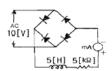
- 9
- 6.4
- 4.5
- 1.8
(정답률: 40%)
43. 직류 분권 발전기를 역회전하면?
- 발전되지 않는다.
- 정회전때와 마찬가지다.
- 과대전압이 유기된다.
- 섬락이 일어난다.
(정답률: 64%)
44. 단상 주상변압기의 2차측(1⑤[V]단자)에 1[Ω]의 저항을 접속하고, 1차측에 900[V]를 가하여 1차 전류가 1[A]라면 1차측 탭 전압[V]은? (단, 변압기의 내부 임피던스는 무시한다.)
- 3350
- 3250
- 3150
- 3⑤0
(정답률: 52%)
45. 정격 150[kVA], ,철손 1[kW], 전부하 동손이 4[kW]인 단상 변압기의 최대 효율[%]과 최대 효율시의 부하[kVA]는? (단, 부하 역률은 1이다.)
- 96.8 %, 125 kVA
- 97.4%, 75 kVA
- 97 %, 50 kVA
- 97.2%, 100 kVA
(정답률: 66%)
46. 유도 전동기의 특성에서 토크와 2차입력, 동기속도와의 관계는?
- 토크는 2차 입력에 비례하고, 동기 속도에 반비례한다.
- 토크는 2차 입력과 동기속도의 곱에 비례한다.
- 토크는 2차 입력에 반비례하고, 동기 속도에 비례한다.
- 토크는 2차 입력의 자승에 비례하고, 동기 속도의 자승에 반비례한다.
(정답률: 57%)
47. 직류기의 보상권선은?
- 계자와 병렬로 연결
- 계자와 직렬로 연결
- 전기자와 병렬로 연결
- 전기자와 직렬로 연결
(정답률: 53%)
48. 백분율 저항강하 2[%], 백분율 리액턴스 강하 3[%]인 변압기가 있다. 역률(지역률) 80[%]인 경우의 전압 변동률은?
- 1.4
- 3.4
- 4.4
- 5.4
(정답률: 69%)
49. 사이리스터에서의 래칭 전류에 관한 설명으로 옳은것은?
- 게이트를 개방한 상태에서 사이리스터 도통 상태를 유지하기 위한 최소의 순전류
- 게이트 전압을 인가한 후에 급히 제거한 상태에서 도통 상태가 유지되는 최소의 순전류
- 사이리스터의 게이트를 개방한 상태에서 전압을 상승하면 급히 증가하게 되는 순전류
- 사이리스터가 턴온하기 시작하는 순전류
(정답률: 59%)
50. 변압기 2대로 출력 P[kW], 역률 cosθ의 3상 유도전동기에 V결선 변압기로 전력을 공급할 때 변압기 1대의 최소 용량[kVA]은?
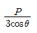
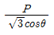
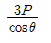
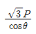
(정답률: 68%)
51. 3상 동기 발전기에서 권선 피치와 자극 피치의 비를 13/15의 단절권으로 하였을 때의 단절권 계수는?
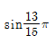
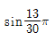
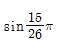
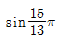
(정답률: 62%)
52. 특수 전동기에 대한 설명 중 잘못 연결된 것은?
- 반작용 전동기 : 역률이 좋다.
- 유도 동기 전동기 : 기동 토크와 인입 토크가 크다.
- 동기 주파수 변환기 : 조작이 간편하고 효율이 좋다.
- 정현파 발전기 : 부하에 관계없이 정현파 기전력을 발생한다.
(정답률: 52%)
53. 부하가 변하면 심하게 속도가 변하는 직류전동기는?
- 직권 전동기
- 분권 전동기
- 차동복권 전동기
- 가동복권 전동기
(정답률: 68%)
54. 직류 발전기의 보극에 관한 설명 중 틀린것은?
- 보극의 계자권선은 전기자 권선과 직렬로 접속한다.
- 보극의 극성은 주자극의 극성을 회전방향으로 옮겨 놓은 것과 같은 극성이다.
- 보극의 수는 주자극과 동일한 수이지만 어떤 경우에는 주자극의 수보다 적은 것도 있다.
- 보극에 의한 자속은 전기자 전류에 비례하여 변화한다.
(정답률: 44%)
55. 3상 유도 전동기에서 s=1일 때의 1차 유기기전력을 E2[V], 2차 1상의 리액턴스를 x2[Ω], 저항을 r2[Ω], 슬립을 s, 비례상수를 K0라고 하면 토크는?
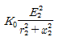
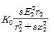
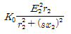
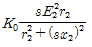
(정답률: 55%)
56. 다음 중 역률이 가장 좋은 전동기는?
- 단상 유도 전동기
- 3상 유도 전동기
- 동기 전동기
- 반발 전동기
(정답률: 61%)
57. 변압기 철심에서 자속 변화에 의하여 발생하는 손실은?
- 와전류 손실
- 표유 부하손실
- 히스테리시스 손실
- 누설 리액턴스 손실
(정답률: 50%)
58. 직류 분권 발전기를 병렬로 운전하는 경우 발전기 용량 P와 정격전압 V값은?
- P와 V 모두 같아야 한다.
- P는 임의, V는 같아야 한다.
- P는 같고, V는 임의이다.
- P와 V 모두 임의이다.
(정답률: 65%)
59. 3상 권선형 유도 전동기가 있다. 2차 회로는 Y로 접속되고 2차 각상의 저항은 0.3[Ω]이며, 1차, 2차 리액턴스의 합은 2차측에서 보아 1.5[Ω]이라 한다. 기동시에 최대 토크를 발생하기 위해서 삽입하여야 할 저항[Ω]은 얼마인가? (단, 1차 각상의 저항은 무시한다.)
- 1.2
- 1.5
- 2
- 2.2
(정답률: 48%)
60. 반파 정류회로에서 직류전압 200[V]를 얻는데 필요한 변압기 2차 상전압은 약 몇[V]인가? (단, 부하는 순저항, 변압기내 전압강하를 무시하면 정류기내의 전압강하는 5[V]로 한다.)
- 68
- 113
- 333
- 455
(정답률: 44%)
4과목: 회로이론
61. 회로에서 저항 15[Ω]에 흐르는 전류는 몇[A]인가?
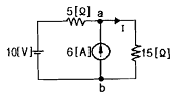
- 8
- 5.5
- 2
- 0.5
(정답률: 55%)
62.
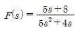
일 때 f(t)의 최종값은?- 1
- 2
- 3
- 4
(정답률: 73%)
63. 불평형 3상 전류 Ia=10+j2[A], Ib=-20-j24[A], Ic=-5+j10[A]일 때의 영상전류 I0값은 얼마인가?(오류 신고가 접수된 문제입니다. 반드시 정답과 해설을 확인하시기 바랍니다.)
- -15+j2
- -5-j4
- -15-j12
- -45-j36
(정답률: 64%)
64. 라플라스 변환함수1/s(s+1)에 대한 역라플라스 변환은?
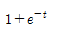
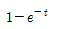
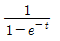
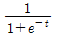
(정답률: 49%)
65. 상순이 abc인 3상 회로에 있어서 대칭분 전압이 V0=-8+j3[V], V1=6-j8{V], V2=8+j12[V]일 때, a상의 전압 Va[V]는?
- 6+j7
- 8+j12
- 6+j14
- 16+j4
(정답률: 62%)
66. 그림과 같은 회로에서 e0[V]의 위상은 ei[V]보다 어떻게 되는가?
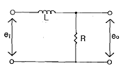
- 앞선다
- 뒤진다
- 동상이다
- 90도 앞선다
(정답률: 61%)
67. L형 4단자 회로망에서 4단자 정수가 A= 15/4, D=1이고, 영상임피던스 Z02가12/5[Ω] 일 때, 영상 임피던스 Z01[Ω]의 값은 얼마인가?
- 12
- 9
- 8
- 6
(정답률: 58%)
68. 다음과 같은 회로에서 정 K형 저역 여파기에 해당되는 것은? (단, 인던턴스는 L, 커패시턴스는 C이다.)
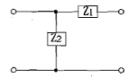
- Z1이 L, Z2가 C인 경우
- Z1이 C, Z2가 L인 경우
- Z1, Z2 모두가 C인 경우
- Z1, Z2 모두가 L인 경우
(정답률: 51%)
69. 그림과 같은 평형 3상 Y형 결선에서 각 상이 8[Ω]의 저항과 6[Ω]의 리액턴스가 직렬로 접속된 부하에 선간전압 100√3[V]가 공급되었다. 이때 선전류는 몇 [A]인가?
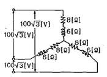
- 5
- 10
- 15
- 20
(정답률: 70%)
70. RC 직렬 회로의 과도 현상에 관한 설명 중 옳게 표현된 것은?
- 과도 전류값은 RC값에 상관이 없다.
- RC값이 클수록 과도 전류값은 빨리 사라진다.
- RC값이 클수록 과도 전류값은 천천히 사라진다.
- 1/RC값이 클수록 과도 전류값은 천천히 사라진다.
(정답률: 69%)
71. 구형파의 파고율은 얼마인가?
- 1.0
- 1.414
- 1.732
- 2.0
(정답률: 67%)
72. 어떤 사인파 교류전압의 평균값이 191[V]이면 최대값은 약 몇 [V]인가?
- 150
- 250
- 300
- 400
(정답률: 59%)
73. 대칭 좌표법에서 사용되는 용어 중 3상에 공통된 성분을 표시하는 것은?
- 공통분
- 정상분
- 역상분
- 영상분
(정답률: 72%)
74. 어떤 제어계의 임펄스 응답이 sint일 때, 이 계의 전달함수를 구하면?
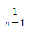
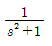
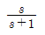
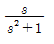
(정답률: 52%)
75. 데브낭의 정리와 쌍대 관계에 있는 정리는?
- 보상의 정리
- 노튼의 정리
- 중첩의 정리
- 밀만의 정리
(정답률: 64%)
76. 그림과 같은 회로에서 인가 전압에 의한 전류 i를 입력, V0를 출력이라 할 때 전달 함수는? (단, 초기 조건은 모두 0이다.)
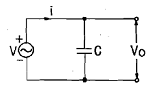
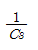
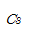
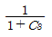
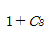
(정답률: 53%)
77. 정전용량 C만의 회로에서 100[V], 60[Hz]의 교류를 가했을 때 60[mA]의 전류가 흐른다면 C는 몇 [㎌]인가?
- 5.26
- 4.32
- 3.59
- 1.59
(정답률: 54%)
78. 그림에서 e(t)=Emcoswt의 전원 전압을 인가했을 때 인덕턴스 L에 축적되는 에너지 [J]는?
(정답률: 30%)
79. θ가 0에서 π까지는i=20[A],π에서 2π까지는 i=0[A]인 파형을 푸리에 급수로 전개할 때 a0는?
- 5
- 7.07
- 10
- 14.14
(정답률: 41%)
80. 코일에 단상 100[V]의 전압을 가하면 30A의 전류가 흐르고 1.8KW의 전력을 소비한다고 한다. 이 코일과 병렬로 콘덴서를 접속하여 회로의 합성 역률을 100%로 하기 위한 용량 리액턴스는 대략 몇 [Ω]이어야 하는가?
- 1.2
- 2.6
- 3.2
- 4.2
(정답률: 36%)
5과목: 전기설비기술기준 및 판단 기준
81. 154kV 옥외 변전소의 울타리 최소 높이는 몇 m인가?
- 2.0
- 2.5
- 3.0
- 3.5
(정답률: 51%)
82. 관등 회로란 무엇인가?
- 분기점으로부터 안정기까지의 전로
- 스위치로부터 방전등까지의 전로
- 스위치로부터 안정기까지의 전로
- 방전등용 안정기로부터 방전관까지의 전로
(정답률: 69%)
83. 고압 절연전선을 사용한 6600[V]배전선이 안테나와 접근상태로 시설되는 경우 그 이격거리는 몇 cm이상이어야 하는가?
- 60
- 80
- 100
- 120
(정답률: 55%)
84. 직류식 전기철도에서 가공으로 시설하는 배류선은 케이블인 경우 이외에는 지름 몇 mm의 경동선이나 이와 동등 이상의 세기 및 굵기의 것 이어야 하는가?
- 2.0
- 2.5
- 3.5
- 4.0
(정답률: 38%)
85. 수소 냉각식 발전기안의 수소 순도가 몇 % 이하로 저하한 경우에 이를 경보하는 장치를 시설해야 하는가?
- 65
- 75
- 85
- 95
(정답률: 71%)
86. 고압 가공전선로의 지지물로 철탑을 사용하는 경우 최대 경간은 몇 m인가?
- 150
- 200
- 250
- 600
(정답률: 70%)
87. 전기부식방식 시설은 지표 또는 수중에서 1m 간격의 임의의 2점간의 전위차가 몇 V를 넘으면 안되는가?
- 5
- 10
- 25
- 30
(정답률: 48%)
88. 특고압 가공전선이 도로 횡단보도교 철도 또는 궤도와 제 1차 접근 상태로 시설되는 경우 특고압 가공전선로는 제 몇 종 보안 공사에 의하여야 하는가?
- 제 1종 특고압 보안공사
- 제 2종 특고압 보안공사
- 제 3종 특고압 보안공사
- 제 4종 특고압 보안공사
(정답률: 57%)
89. 뱅크 용량이 20000kVA 인 전력용 캐패시터에 자동적으로 전로로부터 차단하는 보호장치를 하려고 한다. 반드시 시설하여야 할 보호장치가 아닌 것은?
- 내부에 고장이 생긴 경우에 동작하는 장치
- 절연유의 압력이 변화할 때 동작하는 장치
- 과전류가 생긴 경우에 동작하는 장치
- 과전압이 생긴 경우에 동작하는 장치
(정답률: 67%)
90. 변압기의 고압측 전로와의 혼촉에 의하여 저압 전로의 대지 전압이 150[V]를 넘는 경우에 2초 이내에 고압 전로를 자동 차단하는 장치가 되어있는 6600/220[V] 배전 선로에 있어서 1선 지락 전류가 2A이면 제 2종 접지 저항 값의 최대는 얼마인가?
- 5 [Ω]
- 75[Ω]
- 150[Ω]
- 300[Ω]
(정답률: 45%)
91. 케이블 트레이 공사에 사용하는 케이블 트레이에 적합하지 않은 것은?
- 케이블 트레이의 안전율은 1.5이상이어야 한다.
- 지지대는 트레이 자체 하중과 포설된 케이블 하중을 충분히 견딜 수 있는 강도를 가져야 한다.
- 전선의 피복 등을 손상시킬 돌기 등이 없이 매끈하여야 한다.
- 금속재의 것은 내식성 재료의 것으로 하지 않아도 된다.
(정답률: 72%)
92. 사용 전압이 400V미만인 저압 가공전선은 지름 몇 ㎜이상의 절연전선이어야 하는가?
- 2.6
- 3.6
- 4.0
- 5.0
(정답률: 59%)
93. 345kV의 가공 송전선로를 평지에 건설하는 경우 전선의 지표상 높이는 최소 몇 m 이상이어야 하는가?
- 7.58
- 7.95
- 8.28
- 8.85
(정답률: 72%)
94. 전력보안 가공 통신선(광섬유 케이블은 제외)을 조가할 경우 조가용 선은?(오류 신고가 접수된 문제입니다. 반드시 정답과 해설을 확인하시기 바랍니다.)
- 금속으로 된 단선
- 알루미늄으로 된 단선
- 강심 알루미늄 연선
- 금속으로 된 연선
(정답률: 44%)
95. 저압 옥내 배선용 전선의 굵기는 연동선을 사용할 때 일반적으로 몇 mm2이상의 것을 사용하여야 하는가?
- 2.5
- 1
- 1.5
- 0.75
(정답률: 56%)
96. 고압 지중전선이 지중 약전류 전선 등과 접근하여 이격거리가 몇 cm이하인 때에는 양 전선 사이에 견고한 내화성의 격벽을 설치하는 경우 이외에는 지중전선을 견고한 불연성 또는 난연성의 관에 넣어 그 관이 지중 약전류전선 등과 직접 접촉되지 않도록 하여야 하는가?
- 15
- 20
- 25
- 30
(정답률: 55%)
97. 사용 전압이 154kV 인 가공 송전선로의 시설에서 전선과 식물과의 이격거리는 일반적인 경우에 몇 m이상으로 하여야 하는가?
- 2.8
- 3.2
- 3.6
- 4.2
(정답률: 60%)
98. 금속 덕트 공사에 의한 저압 옥내배선 공사 시설 기준에 적합하지 않는 것은?
- 금속 덕트를 넣은 전선의 단면적의 합계가 덕트의 내부 단면적의 20[%] 이하게 되게 하였다.
- 덕트 상호 및 덕트와 금속관과는 전기적으로 완전하게 접속하였다.
- 덕트를 조용재에 붙이는 경우 덕트의 지지점간의 거리를 4m 이하로 견고하게 붙였다.
- 저압 옥내 배선의 사용 전압이 400V 미만인 경우 덕트에는 제 3종 접지 공사를 한다.
(정답률: 62%)
99. 다음 중 지선의 시설 목적으로 적절하지 않은 것은?
- 유도 장해를 방지하기 위해
- 지지물의 강도를 보강하기 위하여
- 전선로의 안전성을 증가시키기 위하여
- 불평형 장력을 줄이기 위하여
(정답률: 55%)
100. 백열전등 또는 방전등에 전기를 공급하는 옥내 전선로의 대지 전압의 최대값은 일반적으로 몇 V인가?
- 150
- 300
- 400
- 600
(정답률: 74%)
C = ℇ0ℇsA/d
여기서 ℇ0은 진공의 유전율이고, A는 콘덴서의 교차면적, d는 콘덴서의 두께이다. 따라서 액체 유전체를 넣은 콘덴서의 용량은 액체 유전체의 유전율이 ℇs인 것으로 생각할 수 있다.
전압 V가 가해지면 콘덴서에 축적된 전하 Q는 다음과 같다.
Q = CV
누설전류 I는 다음과 같다.
I = dQ/dt
여기서 dQ/dt는 전하의 변화율이므로, V가 일정하게 유지될 때는 dQ/dt = 0이다. 따라서 누설전류는 다음과 같다.
I = V/R
여기서 R은 콘덴서의 저항이다. 콘덴서의 저항은 다음과 같이 주어진다.
R = pA/d
여기서 p는 콘덴서의 고유저항이다. 따라서 누설전류는 다음과 같다.
I = V/(pA/d) = Vd/(pA)
여기서 V = 500[kV], d = 20[㎌], A는 알 수 없지만 일반적으로 콘덴서의 교차면적은 매우 크므로 A를 무시할 수 있다. 따라서 누설전류는 다음과 같다.
I ≈ 500[kV] × 20[㎌] / (1011[Ω ㆍ m]) ≈ 5.13[A]
따라서 정답은 "5.13"이다.